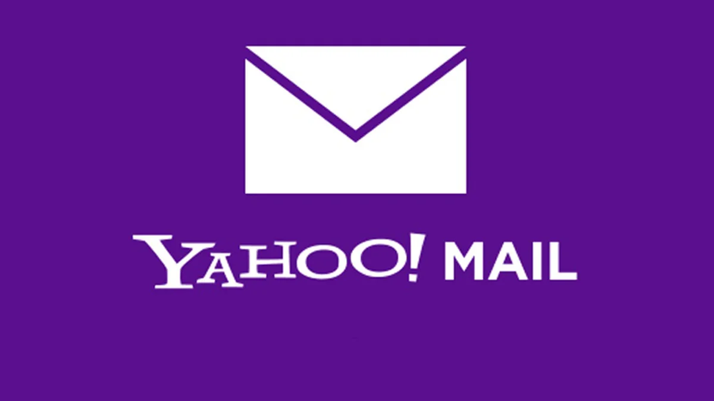
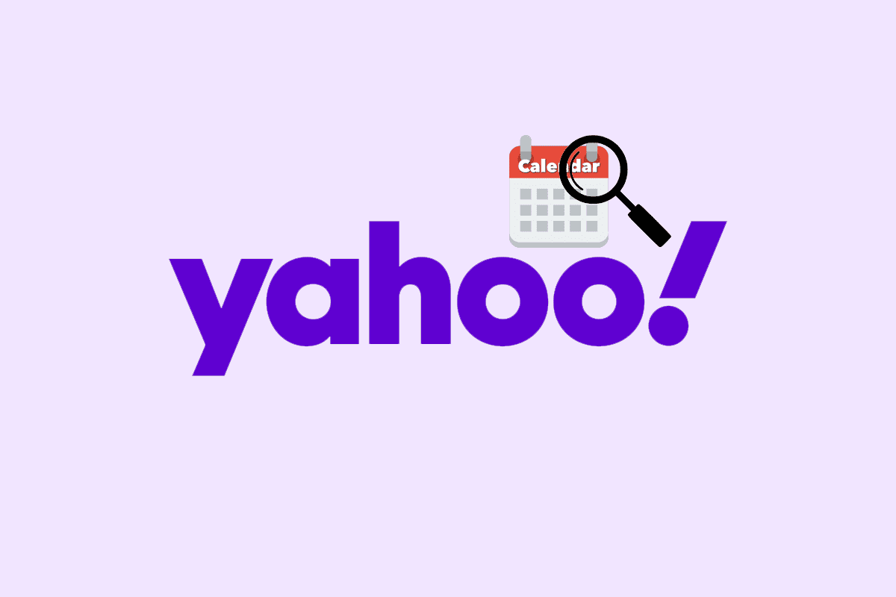
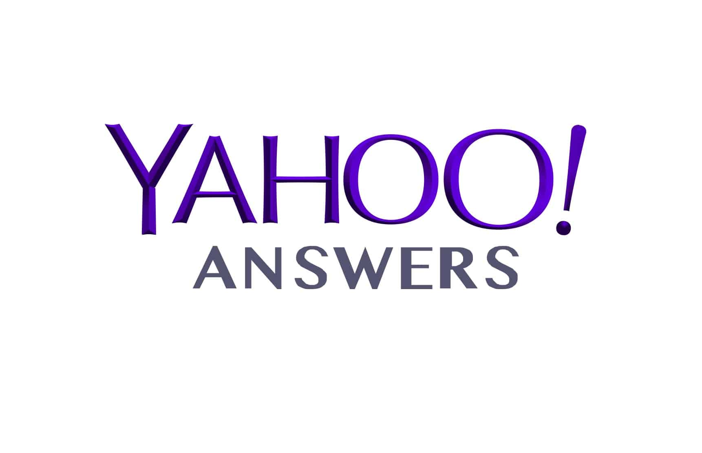
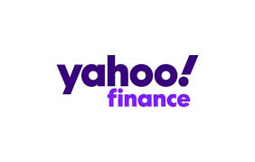

Yahoo

Fundação: Janeiro de 1994
Dono(s) atual(is): Apollo Global Management
Fundadores: Jerry Yang
David Filo
Sede: California, EUAüá∫üá∏
Hístoria do Yahoo
Yahoo foi criado em 1994, por Jerry Yang e David Filo, na época eram estudantes de pós-graduação da Universidade de Stanford. O serviço era chamado de Jerry and David's Guide to the Worls Wide Web, que era basicamente um diretório de links.
Pouco tempo depois, o nome Yahoo foi adotado (Yet Another Hierarchical Officious Oracle). A empresa decolou com seus serviços como Yahoo Messenger e Yahoo Mail e tornaram a marca em um símbolo da prória web. Com a aquisição de serviços como GeoCities e a criação de portais regionais, o Yahoo se transformou em um fenômeno global.
No início dos anos 2000, semanas antes da bolha da internet estourar, o Yahoo estava tão bem que viu suas ações atingirem o valor hístorico de cerca de 125 bilhões de dólares. O ponto máximo foi esse, o Yahoo não conseguiu subir mais nenhum degrau. Nos próximos anos, a companhia não conseguiu fazer avanço contra os rivais como Google e Facebook.
Decisões Erradas
O Yahoo tinha uma péssima gestão, onde acontecia diversas decisões erradas. Onde no seu ínicio, em 1998, se negaram a pagar 1 milhão de dólares para comprar a Google. Em 2002, o Yahoo tentou comprar a concorrente Google, que estava em ascensão, por 3 milhões de dólares, mas a Google pedia 5 milhões.
Em 2006, a rede social Facebook, já dava sinais que se tornaria um fenômeno. O Yahoo viu uma oportunidade e fez uma oferta de 1 milhão de dólares, mas o seu dono, Mark Zuckerberg se negou a vender.
Em 2008, a Microsoft ofereceu uma oferta de 44,6 bilhões de dólares para Jerry Yang, mas ele queria 53 bilhões, Steve Ballmer, Ceo da Microsoft da época aumentou a oferta para 47,5 bilhões, mas Jerry Yang insistiu no outro valor, e então, a Microsoft desistiu.
Com a pressão dos investidores, Jerry Yang que havia se tornado Ceo em 2007, deixou o cargo em 2009 (se manteve no conselho do Yahoo até 2011). Começou uma grande troca de Ceo. Assim que Jerry Yang saiu do cargo, Carol Bartz entrou, que havia feito um bom trabalho na Autodesk, mas não deu certo e saiu em 2011. Em seu lugar assumiu o Tim Morse como interino, até a chegada de Scott Thompson, com sua experiência no PayPal. Que durou cerca de cinco meses por um mal relacionamento com acionistas, que descobriram que ele mentiu em seu currículo. Ross Levinsohn, que até então ocupava a função de diretor da divisão de mídia global da companhia, virou CEO do Yahoo. Mas interinamente. Estava difícil encontrar alguém que pudesse tirar a companhia daquela espiral de problemas. Até que um nome promissor surgiu no horizonte.
Sua Esperança
O nome de Marissa_Mayer foi levantado para o posto. Mestre em ciências da computação pela Universidade de Stanford e especialista em inteligência artificial, foi uma das primeiras funcionárias do Google, tendo realizado trabalhos valiosos para a companhia. Tendo participação em grandes patentes, como Gmail, Maps e a própria ferramenta de busca.
Foi nomeada em julho de 2012, deixando muita gente surpressa, porque ela parecia que nunca sairia da Google. Sua gestão começou bem, suas mudanças fizeram o tráfego aumentar 20% em 2013. Seus funcionários receberam mimos como comida grátis e smartphones, e eram motivados a sair da zona de conforto. Como resultado, o Yahoo Mail foi renovado, e Mayer recebeu permissão para aquisições, que foram mais de 30, sendo a principal delas, em 2013, o Tumblr, que custou cerca de 1,1 bilhões de dólares.
Queda
No início de 2014, relatórios financeiros mostravam que, apesar de boa aparência, o Yahoo tinha queda de receita em 2013 e que o cenário não era nada favorável para 2014. No final de 2014, Yahoo anunciou um plano de restruturação que causaria demissões em masssa.
Demissões continuaram rolando e serviços pouco ou nada rentáveis foram encerrados nos meses seguintes. Mas não era suficiente. Se por um lado o Yahoo cortava despesas com essas medidas, por outro, Mayer continuava gastando muito dinheiro em aquisições duvidosas.
Eric Jackson, um dos investidores mais críticos à gestão de Mayer, chegou a declarar que a companhia gastou mais de 3 bilhões em negócios nos últimos anos que não agregaram valor ao Yahoo.
Venda
No final de 2015, surgiram sinais que o Yahoo, incapaz de sustentar a situação, colocaria seus serviços à venda, mas os sinais apontavam que o próprio Yahoo seria vendido.
Em julho de 2016, a operadora norte-americana Verizon confirmou a compra do Yahoo por 4,83 bilhões de dólares. Que foi parcial, deixando somente 15% dos serviços de fora, que passaram a se chamar Altaba.
Por conta de mudanças da empresa, a Ceo Marissa Mayer deixou o posto.
A Yahoo! perdeu cerca de 95% do seu valor de mercado em 16 anos. Por fim, a Yahoo! ainda fatura perto dos bilhões por trimestre. Mas, não é um bom resultado, quando se fala de tecnologia. Ela poderia ter comprado o Google e Facebook, que hoje produzem óculos de realidade virtual e carros que dirigem sem motorista. Mas, hoje, ainda é um grande site.
Produtos
Comunicação
Yahoo e AOL Mail
São serviços que oferecem ferramentas para organizar e-mails, pode ser usado em navegadores como chrome e fire fox.
Yahoo Calendar
É utilizado para gerenciar sua agenda, colocando datas de reuniões, eventos ou lembretes, sincronizando-a com diversos dispositivos e aplicativos, dando liberdade de criar várias agendas para separar compromissos pessoais dos profissionais.
Yahoo Groups
Uma plataforma online, onde os usuários podiam criar e participar de grupos de discussão e listas de e-mail.
Yahoo Messenger
Era um programa de mensagens instantâneas que permitia aos utilizadores conversar e trocar mensagens de texto com outros utilizadores. Permitia também a realização de chats de voz e vídeo, bem como a partilha de ficheiros e multimédia, como imagens e vídeos.
Pesquisa
Yahoo e AOL Search
São mecanismos de busca na internet que permitem aos utilizadores encontrar informações online.
OneSearch
Uma ferramenta de pesquisa em bibliotecas que permite procurar por diferentes tipos de materiais, como livros, artigos, e-books e outros recursos, em um só lugar.
Multimédia
Yahoo Answers
Era uma plataforma online de perguntas e respostas, onde os utilizadores podiam fazer perguntas sobre diversos temas e obter respostas de outros utilizadores. Foi desativado em 4 de maio de 2021 por conta da queda de popularidade.
Yahoo Finance/AOL Finance
Servem para fornecer informações e notícias financeiras, incluindo cotações de ações, dados de mercado, notícias sobre empresas, relatórios financeiros e análises.
Yahoo Shopping
É um serviço online que te ajuda a encontrar produtos de diferentes lojas online. Além de encontrar produtos, o Yahoo Shopping também oferece promoções, cupons e conteúdo informativo para te inspirar nas suas compras.
Yahoo Sports
É um serviço online que fornece notícias, resultados, estatísticas e conteúdo de diversos esportes.